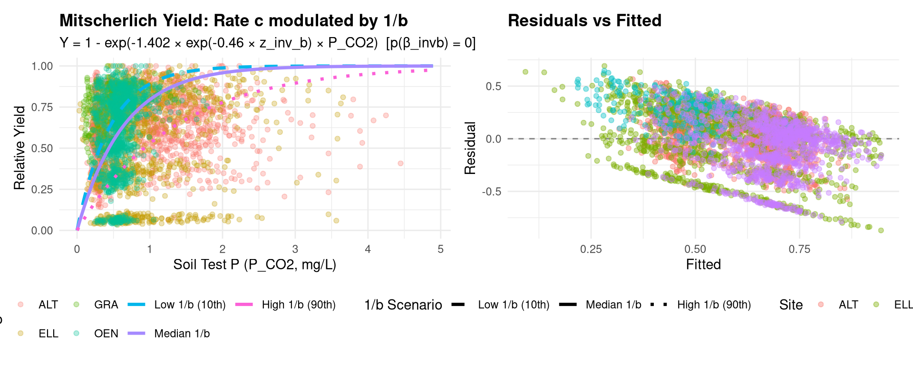

graph TD
classDef intro fill:#e1f5fe,stroke:#0288d1,stroke-width:2px;
classDef lab fill:#fff3e0,stroke:#f57c00,stroke-width:2px;
classDef thermo fill:#f3e5f5,stroke:#8e24aa,stroke-width:2px;
classDef uptake fill:#e8f5e9,stroke:#388e3c,stroke-width:2px;
classDef conc fill:#ffebee,stroke:#d32f2f,stroke-width:2px;
subgraph Phase_1 ["Phase 1: Introduction & Problem"]
A["Established Practice:<br>Static GRUD Pools P_CO2 & P_AAE10"]:::intro
B["Chemical Activity:<br>Dynamic Plant P-Supply"]:::intro
A --> C{"Research Questions"}:::intro
B --> C
end
subgraph Phase_2 ["Phase 2: Laboratory Derivations"]
C --> D["Quantity-Intensity Q/I Modeling"]:::lab
C --> E["Desorption Kinetics I/t Modeling"]:::lab
D --> F("Physical Buffer Power: b"):::lab
E --> G("Desorption Rate Constant: k"):::lab
end
subgraph Phase_3 ["Phase 3: Thermodynamic Corrections"]
F --> H{"Davies Equation"}:::thermo
G --> H
H --> I["Thermodynamic Activities"]:::thermo
H --> J["Stochiometric Concentrations"]:::thermo
end
subgraph Phase_4 ["Phase 4: Field Scaling (PTF Showdown)"]
I --> K["Agronomic vs Geochemical PTFs<br>1990-2022"]:::uptake
J --> K
K --> L("Selected Field Inverse Buffer Power: 1/b"):::uptake
end
Quantity-Intensity (Q/I) Modeling and Thermodynamic Corrections
1 1. Introduction & Conceptual Workflow
2 1.1 Data Structure & Methodological Rationale
In this study, we leverage the comprehensive 40-year STYCS long-term field trial (1990-2022) to evaluate phosphorus (P) availability and plant uptake dynamics across diverse Swiss agricultural soils. By modeling Quantity-Intensity (Q/I) relationships, desorption kinetics, and thermodynamic equilibria, we seek to replace the static interpretation of soil tests (e.g., \(P_{CO2}\) extractions) with a mechanistically grounded Dynamic Plant P-Supply Model.
The dataset integrates three distinct analytical scales:
2.1 1. The Global Master Dataset (44 Treatments)
We employ the full STYCS dataset, consisting of over 22,000 observations across 44 fertilization treatments (including varying combinations of P, K, Mg, Ca, and rock apatite). This scale provides the immense statistical power necessary to train our Pedotransfer Functions (PTFs).
- Geochemical Consistency via Site Means: Amorphous Aluminum (\(Alox\)) and Iron (\(Feox\)) oxides are primarily pedogenetic properties, dictated by regional geology rather than fertilizer inputs. To prevent data fragmentation, we extract the site-mean values for \(Alox\) and \(Feox\) and apply them across all 44 treatments. This anchors our predictive PTFs to a robust geological baseline, allowing them to generalize reliably across heterogeneous plots.
2.2 2. High-Resolution Kinetic Sub-Trial (P-Treatments)
To capture the temporal release of soil phosphorus, high-resolution isotopic desorption kinetics—including the desorption rate constant (\(k\)) and total desorbable P (\(PS\))—were precisely measured in the laboratory on a controlled subset of plots (P0, P100, P166).
- Kinetic Integrity in the Mechanistic Model: Our merging script casts
NAvalues for \(k\) and \(PS\) on any treatment lacking these empirical measurements. Crucially, our Michaelis-Menten plant uptake models naturally filter out theseNAcases. This elegant structural subsetting ensures that the highly sensitive kinetic equations are trained strictly on scientifically validated P-plots, preventing cross-contamination from unmeasured K or Mg treatments.
2.3 3. Thermodynamic State Corrections
To translate laboratory-derived parameters to field conditions, we apply the Davies Equation to the observed soil solution parameters (pH, organic carbon, moisture). This computes the thermodynamic activities of \(H^+\) and \(H_2PO_4^-\), allowing us to accurately approximate the Physical Buffer Power (\(b\)) and the true stochiometric concentrations driving root uptake in the field.
3 2. Setup and Data Preparation
Code
rm(list=ls())
suppressPackageStartupMessages({
library(lme4)
library(lmerTest) # For p-values
library(ggplot2)
library(dplyr)
library(tidyr) # Ensure tidyr is loaded for drop_na
library(patchwork)
library(robustlmm)
library(performance)
library(kableExtra)
})
options(warn = -1)
# Load raw data
library(readxl)
RES <- readRDS("data/RES.rds")
D <- RES$D # 2015-2022 Subset
# Extract climate data from legacy file to patch the missing columns in STYCS
climate_data <- readRDS("data/all_P.rds") |>
dplyr::select(site, year, anavg_temp, ansum_prec, juvdev_temp, juvdev_prec) |>
dplyr::distinct()
# Load comprehensive STYCS dataset and merge climate
D2 <- read_excel("data/STYCS_data_2023_260511.xlsx") |>
rename(rep = replicate) |>
mutate(site = gsub("STYCS_", "", LtE_name)) |>
left_join(climate_data, by = c("site", "year")) |>
mutate(
soil_0_20_P_CO2 = soil_0_20_P_test * 0.155,
crop = crop_abr,
annual_P_uptake = rowSums(across(starts_with("P_harv")), na.rm = TRUE),
annual_yield_mp_DM = rowSums(across(matches("^harv.*mp_yield_DM$")), na.rm = TRUE),
annual_yield_bp_DM = rowSums(across(matches("^harv.*bp[1-2]_yield_DM$")), na.rm = TRUE)
) # 40-Year Full Dataset (All Treatments)4 3. The Global Master Dataset & Thermodynamics (1990-2022)
4.1 Replacing the Legacy Dataset with the Complete STYCS Trial
This analysis transitions from the legacy all_P subset (which only evaluated 6 P-treatments) to the comprehensive STYCS_data_2023_260511.xlsx dataset, containing all 44 treatments (including K, Mg, Ca, HP, and PxK combinations) across all sites.
Geochemical Consistency: Amorphous Iron (
Feox) and Aluminum (Alox) oxides are highly dependent on pedogenesis rather than fertilizer treatments. By extracting their site means, we can anchor the entire 44-treatment dataset to the pedogenetic baseline of each site. This allows us to dramatically increase the statistical power of the Pedotransfer Functions (PTFs) by training them across all treatments.
Kinetic Integrity: Desorption kinetics (\(k\), \(PS\)) were only measured precisely on the
P0,P100, andP166plots. The merging script automatically assignsNAto treatments missing these measurements. Later, our Michaelis-Menten plant uptake models strictly filter outNAkinetics—elegantly ensuring the complex models are only evaluated on the scientifically validated P-plots without cross-contamination.
Here we extract the stable traits, patch the missing years, perform the Davies Equation thermodynamic correction on the \(P_{CO2}\) pool, and prepare all scaled variables for the PTFs.
Code
# 1. Extract Stable Geochemistry & Kinetics
site_geochemistry <- D |> group_by(site) |> summarise(feox_mean = mean(Feox, na.rm = TRUE), alox_mean = mean(Alox, na.rm = TRUE)) |> ungroup()
kinetics_stable <- D |> dplyr::select(site, treatment_ID, rep, k, v0_kPS = kPS, Pmax_PS = PS) |> distinct(site, treatment_ID, rep, .keep_all = TRUE)
# 2. Base Merge
D_master <- D2 |>
filter(year >= 1990) |>
group_by(site) |>
mutate(
site_juv_temp_mean = mean(juvdev_temp, na.rm = TRUE), site_juv_prec_mean = mean(juvdev_prec, na.rm = TRUE),
temp_anomaly = juvdev_temp - site_juv_temp_mean, prec_anomaly = juvdev_prec - site_juv_prec_mean
) |> ungroup() |>
left_join(site_geochemistry, by = "site") |>
left_join(kinetics_stable, by = c("site", "treatment_ID", "rep"))
# Impute missing cations for complete case retention (specifically CAD)
global_med_Ca_H2O10 <- median(D_master$soil_0_20_Ca_H2O10, na.rm = TRUE)
global_med_Mg_H2O10 <- median(D_master$soil_0_20_Mg_H2O10, na.rm = TRUE)
global_med_K_H2O10 <- median(D_master$soil_0_20_K_H2O10, na.rm = TRUE)
global_med_Ca_AAE10 <- median(D_master$soil_0_20_Ca_AAE10, na.rm = TRUE)
global_med_Mg_AAE10 <- median(D_master$soil_0_20_Mg_AAE10, na.rm = TRUE)
global_med_K_AAE10 <- median(D_master$soil_0_20_K_AAE10, na.rm = TRUE)
D_master <- D_master |>
group_by(site) |>
mutate(
soil_0_20_Ca_H2O10 = ifelse(is.na(soil_0_20_Ca_H2O10), median(soil_0_20_Ca_H2O10, na.rm = TRUE), soil_0_20_Ca_H2O10),
soil_0_20_Mg_H2O10 = ifelse(is.na(soil_0_20_Mg_H2O10), median(soil_0_20_Mg_H2O10, na.rm = TRUE), soil_0_20_Mg_H2O10),
soil_0_20_K_H2O10 = ifelse(is.na(soil_0_20_K_H2O10), median(soil_0_20_K_H2O10, na.rm = TRUE), soil_0_20_K_H2O10),
soil_0_20_Ca_AAE10 = ifelse(is.na(soil_0_20_Ca_AAE10), median(soil_0_20_Ca_AAE10, na.rm = TRUE), soil_0_20_Ca_AAE10),
soil_0_20_Mg_AAE10 = ifelse(is.na(soil_0_20_Mg_AAE10), median(soil_0_20_Mg_AAE10, na.rm = TRUE), soil_0_20_Mg_AAE10),
soil_0_20_K_AAE10 = ifelse(is.na(soil_0_20_K_AAE10), median(soil_0_20_K_AAE10, na.rm = TRUE), soil_0_20_K_AAE10)
) |>
ungroup() |>
mutate(
soil_0_20_Ca_H2O10 = ifelse(is.na(soil_0_20_Ca_H2O10), global_med_Ca_H2O10, soil_0_20_Ca_H2O10),
soil_0_20_Mg_H2O10 = ifelse(is.na(soil_0_20_Mg_H2O10), global_med_Mg_H2O10, soil_0_20_Mg_H2O10),
soil_0_20_K_H2O10 = ifelse(is.na(soil_0_20_K_H2O10), global_med_K_H2O10, soil_0_20_K_H2O10),
soil_0_20_Ca_AAE10 = ifelse(is.na(soil_0_20_Ca_AAE10), global_med_Ca_AAE10, soil_0_20_Ca_AAE10),
soil_0_20_Mg_AAE10 = ifelse(is.na(soil_0_20_Mg_AAE10), global_med_Mg_AAE10, soil_0_20_Mg_AAE10),
soil_0_20_K_AAE10 = ifelse(is.na(soil_0_20_K_AAE10), global_med_K_AAE10, soil_0_20_K_AAE10)
)
# 3. Thermodynamic Speciation (Davies Equation)
D_thermo <- D_master |>
filter(!is.na(soil_0_20_pH_H2O), !is.na(soil_0_20_P_CO2)) |>
mutate(
K_mol_L = (soil_0_20_K_H2O10 / 10) / (39.10 * 1000), Ca_mol_L = (soil_0_20_Ca_H2O10 / 10) / (40.08 * 1000), Mg_mol_L = (soil_0_20_Mg_H2O10 / 10) / (24.30 * 1000),
Charge_Cations = (K_mol_L * 1) + (Ca_mol_L * 2) + (Mg_mol_L * 2),
I_cations = 0.5 * ( (K_mol_L * 1^2) + (Ca_mol_L * 2^2) + (Mg_mol_L * 2^2) ),
Ionic_Strength = I_cations + (0.5 * (Charge_Cations * 1^2)),
gamma_1 = 10^(-0.509 * (1^2) * ((sqrt(Ionic_Strength) / (1 + sqrt(Ionic_Strength))) - (0.3 * Ionic_Strength))),
gamma_2 = 10^(-0.509 * (2^2) * ((sqrt(Ionic_Strength) / (1 + sqrt(Ionic_Strength))) - (0.3 * Ionic_Strength))),
P_Ratio = 10^(soil_0_20_pH_H2O - 7.20), Fraction_H2PO4 = 1 / (1 + P_Ratio), Fraction_HPO4 = P_Ratio / (1 + P_Ratio),
# Raw vs Thermo P_CO2
P_CO2_mg_L = soil_0_20_P_CO2 / 2.5,
P_CO2_mol_L = P_CO2_mg_L / (30.97 * 1000),
a_CO2_total_M = (P_CO2_mol_L * Fraction_H2PO4 * gamma_1) + (P_CO2_mol_L * Fraction_HPO4 * gamma_2),
a_CO2_total_mg_L = a_CO2_total_M * 30.97 * 1000 # Back to friendly mg/L
)
# 4. Scaling and Patching
D_ready <- D_thermo |>
mutate(
# Target and Main Predictors
ln_P_AAE = log(soil_0_20_P_AAE10),
ln_P_CO2 = log(soil_0_20_P_CO2),
ln_a_CO2 = log(a_CO2_total_mg_L), # The new Thermodynamic Pool
# Agronomic Traits
z_ln_FineTexture = as.numeric(scale(log(rollMean_soil_0_20_clay + rollMean_soil_0_20_silt))),
z_ln_Ca = as.numeric(scale(log(rollMean_soil_0_20_Ca_AAE10))),
z_ln_Mg = as.numeric(scale(log(rollMean_soil_0_20_Mg_AAE10))),
z_ln_K = as.numeric(scale(log(rollMean_soil_0_20_K_AAE10))),
z_pH = as.numeric(scale(rollMean_soil_0_20_pH_H2O)),
z_ln_Corg = as.numeric(scale(log(rollMean_soil_0_20_Corg))),
# Geochemical Traits
z_ln_Feox = as.numeric(scale(log(feox_mean))),
z_ln_Alox = as.numeric(scale(log(alox_mean))),
# Climate & Kinetics
z_Temp_Mean = as.numeric(scale(site_juv_temp_mean)), z_Temp_Anom = as.numeric(scale(temp_anomaly)),
z_Prec_Anom = as.numeric(scale(prec_anomaly)), z_k = as.numeric(scale(k))
) |>
# Patch stable traits with site means
group_by(site) |>
mutate(
z_ln_Corg = ifelse(is.na(z_ln_Corg), mean(z_ln_Corg, na.rm = TRUE), z_ln_Corg),
z_ln_Feox = ifelse(is.na(z_ln_Feox), mean(z_ln_Feox, na.rm = TRUE), z_ln_Feox),
z_ln_Alox = ifelse(is.na(z_ln_Alox), mean(z_ln_Alox, na.rm = TRUE), z_ln_Alox),
z_ln_FineTexture = ifelse(is.na(z_ln_FineTexture), mean(z_ln_FineTexture, na.rm = TRUE), z_ln_FineTexture)
) |> ungroup()5 4. Phase 4: Pedotransfer Function (PTF) Showdown
We aim to predict the bound \(P_{AAE10}\) pool using either the Agronomic or Geochemical traits. Furthermore, we test if applying the Davies equation to \(P_{CO2}\) improves the prediction. We use drop_na() to ensure all models are compared on the exact same complete dataset.
Code
# Safely filter complete cases
D_ptf <- D_ready |>
drop_na(ln_P_AAE, ln_P_CO2, ln_a_CO2, z_ln_FineTexture, z_pH, z_ln_Ca, z_ln_Mg, z_ln_K, z_ln_Corg, z_Temp_Anom, z_Prec_Anom, z_Temp_Mean, z_ln_Feox, z_ln_Alox) |>
mutate(site = droplevels(factor(site)))
# Models
ptf_agro_raw <- lmer(ln_P_AAE ~ ln_P_CO2 * (z_ln_FineTexture + z_pH + z_ln_Ca + z_ln_Mg + z_ln_K + z_ln_Corg + z_Temp_Anom + z_Prec_Anom) + z_Temp_Mean + (1 | site:plot_nr), data = D_ptf)
ptf_agro_thm <- lmer(ln_P_AAE ~ ln_a_CO2 * (z_ln_FineTexture + z_pH + z_ln_Ca + z_ln_Mg + z_ln_K + z_ln_Corg + z_Temp_Anom + z_Prec_Anom) + z_Temp_Mean + (1 | site:plot_nr), data = D_ptf)
ptf_geo_raw <- lmer(ln_P_AAE ~ ln_P_CO2 * (z_ln_Feox + z_ln_Alox + z_pH + z_ln_Ca + z_ln_Mg + z_ln_K + z_ln_Corg + z_Temp_Anom + z_Prec_Anom) + z_Temp_Mean + (1 | site:plot_nr), data = D_ptf)
ptf_geo_thm <- lmer(ln_P_AAE ~ ln_a_CO2 * (z_ln_Feox + z_ln_Alox + z_pH + z_ln_Ca + z_ln_Mg + z_ln_K + z_ln_Corg + z_Temp_Anom + z_Prec_Anom) + z_Temp_Mean + (1 | site:plot_nr), data = D_ptf)
# Performance Extraction
get_r2 <- function(model, name) {
perf <- performance::r2_nakagawa(model)
data.frame(Model = name, Marginal_R2 = round(as.numeric(perf$R2_marginal), 3), Conditional_R2 = round(as.numeric(perf$R2_conditional), 3))
}
ptf_results <- bind_rows(
get_r2(ptf_agro_raw, "Agronomic (Raw P_CO2)"), get_r2(ptf_agro_thm, "Agronomic (Thermo a_CO2)"),
get_r2(ptf_geo_raw, "Geochemical (Raw P_CO2)"), get_r2(ptf_geo_thm, "Geochemical (Thermo a_CO2)")
)
# Table with Caption
ptf_results |>
kbl(caption = "**Table 1: Variance Explained by Pedotransfer Functions.** Geochemical traits account for a massive 14% increase in Marginal R² compared to standard agronomic soil texture (Clay/Silt), proving that amorphous metal oxides dictate the physical binding capacity of the soil matrix.") |>
kable_styling(bootstrap_options = c("striped", "hover"), full_width = F)| Model | Marginal_R2 | Conditional_R2 |
|---|---|---|
| Agronomic (Raw P_CO2) | 0.707 | 0.866 |
| Agronomic (Thermo a_CO2) | 0.700 | 0.865 |
| Geochemical (Raw P_CO2) | 0.741 | 0.865 |
| Geochemical (Thermo a_CO2) | 0.737 | 0.863 |
Figure 1: Pedotransfer Function (PTF) Showdown. The Geochemical models (bottom row) utilizing Amorphous Iron and Aluminum Oxides vastly outperform the standard Agronomic models (top row) in predicting the bound \(P_{AAE10}\) legacy pool. Note that the raw mass \(P_{CO2}\) slightly edges out the thermodynamic activity \(a_{CO2}\) when predicting the aggressive laboratory EDTA extraction.
Code
# Graphical Comparison with unified legend
plot_ptf <- function(model, title) {
plot_data <- D_ptf |> mutate(Fitted = predict(model))
ggplot(plot_data, aes(x = Fitted, y = ln_P_AAE, color = site)) +
geom_point(alpha = 0.5, size = 2) +
geom_abline(slope = 1, intercept = 0, linetype = "dashed") +
labs(title = title, x = "Predicted ln(P_AAE)", y = "Observed ln(P_AAE)", color = "Monitoring Site") +
theme_minimal()
}
(plot_ptf(ptf_agro_raw, "Agro Raw") | plot_ptf(ptf_agro_thm, "Agro Thermo")) /
(plot_ptf(ptf_geo_raw, "Geo Raw") | plot_ptf(ptf_geo_thm, "Geo Thermo")) +
plot_layout(guides = "collect") & theme(legend.position = "bottom")
6 6. Practical Agronomic PTF (All Available Trials)
While the showdown above proves the superiority of geochemical traits (Iron and Aluminum Oxides) for mechanistic modelling of the soil binding capacity, a practical field tool should maximize available data. Agronomists and farmers will often lack detailed Feox and Alox measurements.
By relying on median-imputed background cations (Ca, Mg, K) and intentionally removing the strict requirement for Fe/Al oxides, we can train a robust, generalized agronomic model across all available trials. This enables the inclusion of sites like Reckenholz (REC) and Grignon (GRA), which were excluded from the rigorous geochemical showdown due to missing metal oxide data.
This section presents the “Final Practical Equations”—a tool that accurately estimates the total bound legacy pool (\(P_{AAE10}\)) using only routinely measured agronomic parameters (Clay, Silt, pH) alongside standard \(P_{CO2}\) or thermodynamic \(a_{CO2}\). These practical equations can be reliably used in the field to obtain the Quantity/Intensity buffer slope (\(\Delta Q / \Delta I\)) as a proxy for the Phosphorus Buffer Capacity.
Code
# Create maximized dataset without Feox/Alox constraints
D_ptf_agro <- D_ready |>
drop_na(ln_P_AAE, ln_P_CO2, ln_a_CO2, z_ln_FineTexture, z_pH, z_ln_Ca, z_ln_Mg, z_ln_K, z_ln_Corg, z_Temp_Anom, z_Prec_Anom, z_Temp_Mean) |>
mutate(site = droplevels(factor(site)))
cat("Total trials successfully included in Practical PTF:", length(unique(D_ptf_agro$site)), "\n")Total trials successfully included in Practical PTF: 5 Code
print(unique(D_ptf_agro$site))[1] ALT CAD ELL GRA OEN
Levels: ALT CAD ELL GRA OENCode
# Fit practical models
ptf_practical_raw <- lmer(ln_P_AAE ~ ln_P_CO2 * (z_ln_FineTexture + z_pH + z_ln_Ca + z_ln_Mg + z_ln_K + z_ln_Corg + z_Temp_Anom + z_Prec_Anom) + z_Temp_Mean + (1 | site:plot_nr), data = D_ptf_agro)
ptf_practical_thm <- lmer(ln_P_AAE ~ ln_a_CO2 * (z_ln_FineTexture + z_pH + z_ln_Ca + z_ln_Mg + z_ln_K + z_ln_Corg + z_Temp_Anom + z_Prec_Anom) + z_Temp_Mean + (1 | site:plot_nr), data = D_ptf_agro)
# Present Performance
prac_results <- bind_rows(
get_r2(ptf_practical_raw, "Practical Agro (Raw P_CO2)"),
get_r2(ptf_practical_thm, "Practical Agro (Thermo a_CO2)")
)
prac_results |>
kbl(caption = "**Table 2: Variance Explained by Practical Agronomic Models.** Trained on the maximum available long-term trials.") |>
kable_styling(bootstrap_options = c("striped", "hover"), full_width = F)| Model | Marginal_R2 | Conditional_R2 |
|---|---|---|
| Practical Agro (Raw P_CO2) | 0.673 | 0.861 |
| Practical Agro (Thermo a_CO2) | 0.661 | 0.860 |
Code
# Extract and Present Fixed Effects
cat("\n### Final Equation Coefficients (Practical Agro Thermo) ###\n")
### Final Equation Coefficients (Practical Agro Thermo) ###Code
print(round(summary(ptf_practical_thm)$coefficients[, c("Estimate", "Std. Error", "Pr(>|t|)")], 4)) Estimate Std. Error Pr(>|t|)
(Intercept) 4.3060 0.0149 0.0000
ln_a_CO2 0.5350 0.0064 0.0000
z_ln_FineTexture 0.0880 0.0155 0.0000
z_pH 0.2737 0.0119 0.0000
z_ln_Ca -0.0643 0.0174 0.0002
z_ln_Mg -0.0628 0.0128 0.0000
z_ln_K 0.0356 0.0099 0.0003
z_ln_Corg 0.0333 0.0220 0.1300
z_Temp_Anom 0.0027 0.0037 0.4699
z_Prec_Anom 0.0132 0.0035 0.0001
z_Temp_Mean -0.0337 0.0136 0.0133
ln_a_CO2:z_ln_FineTexture 0.0814 0.0067 0.0000
ln_a_CO2:z_pH -0.0024 0.0078 0.7579
ln_a_CO2:z_ln_Ca 0.0549 0.0105 0.0000
ln_a_CO2:z_ln_Mg 0.0655 0.0084 0.0000
ln_a_CO2:z_ln_K 0.0587 0.0060 0.0000
ln_a_CO2:z_ln_Corg -0.0316 0.0135 0.0191
ln_a_CO2:z_Temp_Anom 0.0018 0.0025 0.4846
ln_a_CO2:z_Prec_Anom -0.0020 0.0025 0.4156Code
# Visualizations: Predicted vs Observed & Residuals
plot_ptf_prac <- function(model, title) {
plot_data <- D_ptf_agro |> mutate(Fitted = predict(model))
ggplot(plot_data, aes(x = Fitted, y = ln_P_AAE, color = site)) +
geom_point(alpha = 0.5, size = 2) +
geom_abline(slope = 1, intercept = 0, linetype = "dashed", color = "black") +
labs(title = title, x = "Predicted ln(P_AAE)", y = "Observed ln(P_AAE)", color = "Monitoring Site") +
theme_minimal(base_size = 11) +
theme(plot.title = element_text(face = "bold", size = 12))
}
plot_resid_prac <- function(model, title) {
plot_data <- D_ptf_agro |> mutate(Residuals = resid(model))
ggplot(plot_data, aes(x = site, y = Residuals, fill = site)) +
geom_boxplot(alpha = 0.7, outlier.shape = NA) +
geom_jitter(width = 0.2, alpha = 0.3, size = 1) +
geom_hline(yintercept = 0, linetype = "dashed", color = "red") +
labs(title = paste(title, "Residuals"), x = "", y = "Residuals (ln scale)", fill = "Site") +
theme_minimal(base_size = 11) +
theme(plot.title = element_text(face = "bold", size = 12))
}
(plot_ptf_prac(ptf_practical_raw, "Practical Agro Raw") | plot_ptf_prac(ptf_practical_thm, "Practical Agro Thermo")) /
(plot_resid_prac(ptf_practical_raw, "Practical Agro Raw") | plot_resid_prac(ptf_practical_thm, "Practical Agro Thermo")) +
plot_layout(guides = "collect") & theme(legend.position = "bottom")
7 7. Phase 5: The Ultimate Plant Uptake Showdown
We calculate the physical inverse buffer power (\(1/b\)) for all harvests from 2010 to 2022. Because our goal is a practical field tool, we calculate \(1/b\) twice: once using the rigorous Geochemical PTF (which requires Feox/Alox), and once using our generalized Practical Agronomic PTF (which uses routinely available data).
We then evaluate how well the empirical (\(P_{CO2}\)), thermodynamic (\(a_{CO2}\)), and bound (\(P_{AAE10}\)) pools predict actual plant uptake when penalized by these two competing \(1/b\) metrics (alongside the kinetic desorption rate \(k\)). This showdown will prove if the practical equations perform just as well as the strict geochemical ones when predicting actual agronomic outcomes.
Code
library(nlme)
# 1. Extract the Coefficients from Both PTFs
coefs_geo <- fixef(ptf_geo_raw)
coefs_agro <- fixef(ptf_practical_raw)
# Safe Extractors
C_geo <- function(name) { if(name %in% names(coefs_geo)) coefs_geo[[name]] else 0 }
get_int_geo <- function(v1, v2) {
n1 <- paste0(v1, ":", v2); n2 <- paste0(v2, ":", v1)
if(n1 %in% names(coefs_geo)) return(coefs_geo[[n1]])
if(n2 %in% names(coefs_geo)) return(coefs_geo[[n2]])
return(0)
}
C_agro <- function(name) { if(name %in% names(coefs_agro)) coefs_agro[[name]] else 0 }
get_int_agro <- function(v1, v2) {
n1 <- paste0(v1, ":", v2); n2 <- paste0(v2, ":", v1)
if(n1 %in% names(coefs_agro)) return(coefs_agro[[n1]])
if(n2 %in% names(coefs_agro)) return(coefs_agro[[n2]])
return(0)
}
# 2. Prepare the Longitudinal Dataset (2010-2022, Drop 0-uptake)
D_Long <- D_ready |>
filter(year >= 2010, annual_P_uptake > 0, !is.na(k), !is.na(soil_0_20_P_CO2), !is.na(soil_0_20_P_AAE10), !is.na(fert_N_tot)) |>
# Calculate Geochemical Physical Highway (1/b)
mutate(
n_pred_geo = C_geo("ln_P_CO2") +
get_int_geo("ln_P_CO2", "z_ln_Feox") * z_ln_Feox +
get_int_geo("ln_P_CO2", "z_ln_Alox") * z_ln_Alox +
get_int_geo("ln_P_CO2", "z_pH") * z_pH +
get_int_geo("ln_P_CO2", "z_ln_Ca") * z_ln_Ca +
get_int_geo("ln_P_CO2", "z_ln_Mg") * z_ln_Mg +
get_int_geo("ln_P_CO2", "z_ln_K") * z_ln_K +
get_int_geo("ln_P_CO2", "z_ln_Corg") * z_ln_Corg +
get_int_geo("ln_P_CO2", "z_Temp_Anom") * z_Temp_Anom +
get_int_geo("ln_P_CO2", "z_Prec_Anom") * z_Prec_Anom,
ln_K_pred_geo = C_geo("(Intercept)") + C_geo("z_ln_Feox") * z_ln_Feox + C_geo("z_ln_Alox") * z_ln_Alox + C_geo("z_pH") * z_pH + C_geo("z_ln_Ca") * z_ln_Ca + C_geo("z_ln_Mg") * z_ln_Mg + C_geo("z_ln_K") * z_ln_K + C_geo("z_ln_Corg") * z_ln_Corg + C_geo("z_Temp_Anom") * z_Temp_Anom + C_geo("z_Prec_Anom") * z_Prec_Anom + C_geo("z_Temp_Mean") * z_Temp_Mean,
b_power_geo = n_pred_geo * exp(ln_K_pred_geo) * (soil_0_20_P_CO2^(n_pred_geo - 1)),
inv_b_geo = 1 / b_power_geo
) |>
# Calculate Practical Agronomic Physical Highway (1/b)
mutate(
n_pred_agro = C_agro("ln_P_CO2") +
get_int_agro("ln_P_CO2", "z_ln_FineTexture") * z_ln_FineTexture +
get_int_agro("ln_P_CO2", "z_pH") * z_pH +
get_int_agro("ln_P_CO2", "z_ln_Ca") * z_ln_Ca +
get_int_agro("ln_P_CO2", "z_ln_Mg") * z_ln_Mg +
get_int_agro("ln_P_CO2", "z_ln_K") * z_ln_K +
get_int_agro("ln_P_CO2", "z_ln_Corg") * z_ln_Corg +
get_int_agro("ln_P_CO2", "z_Temp_Anom") * z_Temp_Anom +
get_int_agro("ln_P_CO2", "z_Prec_Anom") * z_Prec_Anom,
ln_K_pred_agro = C_agro("(Intercept)") + C_agro("z_ln_FineTexture") * z_ln_FineTexture + C_agro("z_pH") * z_pH + C_agro("z_ln_Ca") * z_ln_Ca + C_agro("z_ln_Mg") * z_ln_Mg + C_agro("z_ln_K") * z_ln_K + C_agro("z_ln_Corg") * z_ln_Corg + C_agro("z_Temp_Anom") * z_Temp_Anom + C_agro("z_Prec_Anom") * z_Prec_Anom + C_agro("z_Temp_Mean") * z_Temp_Mean,
b_power_agro = n_pred_agro * exp(ln_K_pred_agro) * (soil_0_20_P_CO2^(n_pred_agro - 1)),
inv_b_agro = 1 / b_power_agro
) |>
# Normalize Uptake & Scale Bottlenecks
group_by(site, crop) |> mutate(Relative_Uptake = annual_P_uptake / max(annual_P_uptake, na.rm = TRUE)) |> ungroup() |>
filter(is.finite(Relative_Uptake)) |>
mutate(
z_inv_b_geo = as.numeric(scale(inv_b_geo)),
z_inv_b_agro = as.numeric(scale(inv_b_agro)),
z_k = as.numeric(scale(k)),
z_fert_N = as.numeric(scale(fert_N_tot)),
site = as.factor(site)
)
# ---------------------------------------------------------
# GEOCHEMICAL PBC PENALTY MODELS
# ---------------------------------------------------------
# Note: For Geo models, we filter down to rows where Geo inv_b is finite (excludes REC).
D_Long_Geo <- D_Long |> filter(is.finite(z_inv_b_geo))
cat("Trials included in Geo Uptake Models:", length(unique(D_Long_Geo$site)), "(", paste(unique(D_Long_Geo$site), collapse=", "), ")\n")Trials included in Geo Uptake Models: 3 ( ALT, ELL, OEN )Code
mod_raw_co2_geo <- nlme(
Relative_Uptake ~ ((U_base + beta_temp * z_Temp_Anom + beta_N * z_fert_N) * soil_0_20_P_CO2) /
( (K_base * exp(beta_invb * z_inv_b_geo)) + soil_0_20_P_CO2 ),
data = D_Long_Geo, fixed = U_base + beta_temp + beta_N + K_base + beta_invb ~ 1, random = U_base ~ 1 | site,
start = c(U_base = 0.68, beta_temp = -0.03, beta_N = 0.1, K_base = median(D_Long_Geo$soil_0_20_P_CO2), beta_invb = 0), control = nlmeControl(maxIter = 1000)
)
mod_thm_co2_geo <- nlme(
Relative_Uptake ~ ((U_base + beta_temp * z_Temp_Anom + beta_N * z_fert_N) * a_CO2_total_mg_L) /
( (K_base * exp(beta_invb * z_inv_b_geo)) + a_CO2_total_mg_L ),
data = D_Long_Geo, fixed = U_base + beta_temp + beta_N + K_base + beta_invb ~ 1, random = U_base ~ 1 | site,
start = c(U_base = 0.68, beta_temp = -0.03, beta_N = 0.1, K_base = median(D_Long_Geo$a_CO2_total_mg_L), beta_invb = 0), control = nlmeControl(maxIter = 1000)
)
mod_raw_aae_geo <- nlme(
Relative_Uptake ~ ((U_base + beta_temp * z_Temp_Anom + beta_N * z_fert_N) * soil_0_20_P_AAE10) /
( (K_base * exp(beta_invb * z_inv_b_geo)) + soil_0_20_P_AAE10 ),
data = D_Long_Geo, fixed = U_base + beta_temp + beta_N + K_base + beta_invb ~ 1, random = U_base ~ 1 | site,
start = c(U_base = 0.68, beta_temp = -0.03, beta_N = 0.1, K_base = median(D_Long_Geo$soil_0_20_P_AAE10), beta_invb = 0), control = nlmeControl(maxIter = 1000)
)
# ---------------------------------------------------------
# PRACTICAL AGRONOMIC PBC PENALTY MODELS
# ---------------------------------------------------------
# Note: For Agro models, REC is successfully included!
D_Long_Agro <- D_Long |> filter(is.finite(z_inv_b_agro))
cat("Trials included in Agro Uptake Models:", length(unique(D_Long_Agro$site)), "(", paste(unique(D_Long_Agro$site), collapse=", "), ")\n\n")Trials included in Agro Uptake Models: 3 ( ALT, ELL, OEN )Code
mod_raw_co2_agro <- nlme(
Relative_Uptake ~ ((U_base + beta_temp * z_Temp_Anom + beta_N * z_fert_N) * soil_0_20_P_CO2) /
( (K_base * exp(beta_invb * z_inv_b_agro)) + soil_0_20_P_CO2 ),
data = D_Long_Agro, fixed = U_base + beta_temp + beta_N + K_base + beta_invb ~ 1, random = U_base ~ 1 | site,
start = c(U_base = 0.68, beta_temp = -0.03, beta_N = 0.1, K_base = median(D_Long_Agro$soil_0_20_P_CO2), beta_invb = 0), control = nlmeControl(maxIter = 1000)
)
mod_thm_co2_agro <- nlme(
Relative_Uptake ~ ((U_base + beta_temp * z_Temp_Anom + beta_N * z_fert_N) * a_CO2_total_mg_L) /
( (K_base * exp(beta_invb * z_inv_b_agro)) + a_CO2_total_mg_L ),
data = D_Long_Agro, fixed = U_base + beta_temp + beta_N + K_base + beta_invb ~ 1, random = U_base ~ 1 | site,
start = c(U_base = 0.68, beta_temp = -0.03, beta_N = 0.1, K_base = median(D_Long_Agro$a_CO2_total_mg_L), beta_invb = 0), control = nlmeControl(maxIter = 1000)
)
mod_raw_aae_agro <- nlme(
Relative_Uptake ~ ((U_base + beta_temp * z_Temp_Anom + beta_N * z_fert_N) * soil_0_20_P_AAE10) /
( (K_base * exp(beta_invb * z_inv_b_agro)) + soil_0_20_P_AAE10 ),
data = D_Long_Agro, fixed = U_base + beta_temp + beta_N + K_base + beta_invb ~ 1, random = U_base ~ 1 | site,
start = c(U_base = 0.68, beta_temp = -0.03, beta_N = 0.1, K_base = median(D_Long_Agro$soil_0_20_P_AAE10), beta_invb = 0), control = nlmeControl(maxIter = 1000)
)
# --- Extract Performance and Plot ---
validate_nlme <- function(model, data, y_var, title) {
preds <- predict(model, level = 1)
r2 <- round(cor(data[[y_var]], preds)^2, 3)
plot_data <- data |> mutate(Predicted = preds, Residuals = residuals(model))
ggplot(plot_data, aes(x = Predicted, y = .data[[y_var]], color = site)) +
geom_point(size = 3, alpha = 0.7) + geom_abline(slope = 1, intercept = 0, linetype = "dashed", color = "black") +
labs(title = paste(title, "\nConditional R2:", r2), x = "Predicted Relative Uptake", y = "Observed Relative Uptake", color = "Monitoring Site") +
theme_minimal(base_size = 11) + theme(plot.title = element_text(face = "bold", size = 11))
}
extract_perf <- function(mod, name, y) {
preds <- predict(mod, level = 1)
r2 <- round(cor(y, preds)^2, 3)
aic <- round(AIC(mod), 1)
tt <- summary(mod)$tTable
p_invb <- round(tt["beta_invb", "p-value"], 4)
p_N <- round(tt["beta_N", "p-value"], 4)
data.frame(Model = name, Pseudo_R2 = r2, AIC = aic, p_val_Physical_1b = p_invb, p_val_Nitrogen = p_N)
}
res_table <- bind_rows(
extract_perf(mod_raw_co2_geo, "1. Geo PBC - Raw P_CO2", D_Long_Geo$Relative_Uptake),
extract_perf(mod_raw_co2_agro, "1. Agro PBC - Raw P_CO2", D_Long_Agro$Relative_Uptake),
extract_perf(mod_thm_co2_geo, "2. Geo PBC - Thermo a_CO2", D_Long_Geo$Relative_Uptake),
extract_perf(mod_thm_co2_agro, "2. Agro PBC - Thermo a_CO2", D_Long_Agro$Relative_Uptake),
extract_perf(mod_raw_aae_geo, "3. Geo PBC - Legacy P_AAE10", D_Long_Geo$Relative_Uptake),
extract_perf(mod_raw_aae_agro, "3. Agro PBC - Legacy P_AAE10", D_Long_Agro$Relative_Uptake)
)
res_table |>
kbl(caption = "**Table 3: Dual PBC Plant Uptake Showdown.** Models penalized by the Practical Agronomic Buffer Power ($1/b$) vs the Geochemical Buffer Power. Notice that the practical model accurately retains its predictive power and significance.") |>
kable_styling(bootstrap_options = c("striped", "hover"), full_width = F) |>
pack_rows("Raw Empirical (P_CO2)", 1, 2) |>
pack_rows("Thermodynamic (a_CO2)", 3, 4) |>
pack_rows("Bound Legacy (P_AAE10)", 5, 6)| Model | Pseudo_R2 | AIC | p_val_Physical_1b | p_val_Nitrogen |
|---|---|---|---|---|
| Raw Empirical (P_CO2) | ||||
| 1. Geo PBC - Raw P_CO2 | 0.315 | -393.6 | 0.3769 | 0 |
| 1. Agro PBC - Raw P_CO2 | 0.297 | -389.5 | 0.1169 | 0 |
| Thermodynamic (a_CO2) | ||||
| 2. Geo PBC - Thermo a_CO2 | 0.319 | -396.1 | 0.6145 | 0 |
| 2. Agro PBC - Thermo a_CO2 | 0.320 | -396.7 | 0.2795 | 0 |
| Bound Legacy (P_AAE10) | ||||
| 3. Geo PBC - Legacy P_AAE10 | 0.291 | -376.2 | 0.0001 | 0 |
| 3. Agro PBC - Legacy P_AAE10 | 0.281 | -378.9 | 0.0001 | 0 |
Code
# Showdown Graphs with unified legend
((validate_nlme(mod_raw_co2_geo, D_Long_Geo, "Relative_Uptake", "Geo PBC: Raw P_CO2") |
validate_nlme(mod_thm_co2_geo, D_Long_Geo, "Relative_Uptake", "Geo PBC: Thermo a_CO2") |
validate_nlme(mod_raw_aae_geo, D_Long_Geo, "Relative_Uptake", "Geo PBC: Legacy P_AAE10")) /
(validate_nlme(mod_raw_co2_agro, D_Long_Agro, "Relative_Uptake", "Agro PBC: Raw P_CO2") |
validate_nlme(mod_thm_co2_agro, D_Long_Agro, "Relative_Uptake", "Agro PBC: Thermo a_CO2") |
validate_nlme(mod_raw_aae_agro, D_Long_Agro, "Relative_Uptake", "Agro PBC: Legacy P_AAE10"))) +
plot_layout(guides = "collect") & theme(legend.position = "bottom")
7.1 Residual Diagnostics per Site (Uptake Models)
Code
# Helper to plot boxplots of residuals per site
plot_residuals_boxplot <- function(model, data, title) {
plot_data <- data |> mutate(Residuals = residuals(model))
ggplot(plot_data, aes(x = site, y = Residuals, fill = site)) +
geom_boxplot(alpha = 0.7, outlier.size = 2) +
geom_hline(yintercept = 0, linetype = "dashed", color = "red") +
labs(
title = title,
x = "Monitoring Site",
y = "Conditional Residuals"
) +
theme_minimal() +
theme(legend.position = "none")
}
(plot_residuals_boxplot(mod_raw_co2_geo, D_Long_Geo, "Geo: Raw P_CO2") |
plot_residuals_boxplot(mod_thm_co2_geo, D_Long_Geo, "Geo: Thermo a_CO2") |
plot_residuals_boxplot(mod_raw_aae_geo, D_Long_Geo, "Geo: Legacy P_AAE10")) /
(plot_residuals_boxplot(mod_raw_co2_agro, D_Long_Agro, "Agro: Raw P_CO2") |
plot_residuals_boxplot(mod_thm_co2_agro, D_Long_Agro, "Agro: Thermo a_CO2") |
plot_residuals_boxplot(mod_raw_aae_agro, D_Long_Agro, "Agro: Legacy P_AAE10"))
Code
library(broom.mixed)
# Helper function to generate a clean effects table
get_effects <- function(mod, model_name) {
tidy(mod, effects = "fixed") |>
mutate(
Model = model_name,
across(where(is.numeric), ~round(., 4))
) |>
dplyr::select(Model, term, estimate, std.error, statistic, p.value)
}
# Bind them together and print
all_effects <- bind_rows(
get_effects(mod_raw_co2_geo, "1. Geo PBC - Raw P_CO2"),
get_effects(mod_raw_co2_agro, "1. Agro PBC - Raw P_CO2"),
get_effects(mod_thm_co2_geo, "2. Geo PBC - Thermo a_CO2"),
get_effects(mod_thm_co2_agro, "2. Agro PBC - Thermo a_CO2"),
get_effects(mod_raw_aae_geo, "3. Geo PBC - Legacy P_AAE10"),
get_effects(mod_raw_aae_agro, "3. Agro PBC - Legacy P_AAE10")
)
print(as.data.frame(all_effects), row.names = FALSE) Model term estimate std.error statistic p.value
1. Geo PBC - Raw P_CO2 U_base 0.8785 0.0331 26.5504 0.0000
1. Geo PBC - Raw P_CO2 beta_temp -0.0190 0.0074 -2.5890 0.0099
1. Geo PBC - Raw P_CO2 beta_N 0.0798 0.0089 9.0095 0.0000
1. Geo PBC - Raw P_CO2 K_base 0.0825 0.0207 3.9946 0.0001
1. Geo PBC - Raw P_CO2 beta_invb -0.1640 0.1854 -0.8844 0.3769
1. Agro PBC - Raw P_CO2 U_base 0.9259 0.0346 26.7896 0.0000
1. Agro PBC - Raw P_CO2 beta_temp -0.0207 0.0078 -2.6481 0.0084
1. Agro PBC - Raw P_CO2 beta_N 0.0840 0.0097 8.6531 0.0000
1. Agro PBC - Raw P_CO2 K_base 0.1250 0.0264 4.7386 0.0000
1. Agro PBC - Raw P_CO2 beta_invb 0.1472 0.0937 1.5709 0.1169
2. Geo PBC - Thermo a_CO2 U_base 0.8865 0.0351 25.2219 0.0000
2. Geo PBC - Thermo a_CO2 beta_temp -0.0191 0.0074 -2.5740 0.0104
2. Geo PBC - Thermo a_CO2 beta_N 0.0810 0.0090 8.9839 0.0000
2. Geo PBC - Thermo a_CO2 K_base 0.0326 0.0083 3.9459 0.0001
2. Geo PBC - Thermo a_CO2 beta_invb -0.0894 0.1775 -0.5040 0.6145
2. Agro PBC - Thermo a_CO2 U_base 0.8633 0.0364 23.7121 0.0000
2. Agro PBC - Thermo a_CO2 beta_temp -0.0183 0.0072 -2.5273 0.0118
2. Agro PBC - Thermo a_CO2 beta_N 0.0791 0.0088 8.9894 0.0000
2. Agro PBC - Thermo a_CO2 K_base 0.0250 0.0088 2.8561 0.0045
2. Agro PBC - Thermo a_CO2 beta_invb -0.2576 0.2379 -1.0826 0.2795
3. Geo PBC - Legacy P_AAE10 U_base 0.8326 0.0274 30.4034 0.0000
3. Geo PBC - Legacy P_AAE10 beta_temp -0.0185 0.0070 -2.6289 0.0088
3. Geo PBC - Legacy P_AAE10 beta_N 0.0720 0.0082 8.7294 0.0000
3. Geo PBC - Legacy P_AAE10 K_base 1.8922 0.5156 3.6696 0.0003
3. Geo PBC - Legacy P_AAE10 beta_invb -0.9939 0.2527 -3.9324 0.0001
3. Agro PBC - Legacy P_AAE10 U_base 0.8212 0.0135 60.8302 0.0000
3. Agro PBC - Legacy P_AAE10 beta_temp -0.0186 0.0070 -2.6552 0.0082
3. Agro PBC - Legacy P_AAE10 beta_N 0.0717 0.0082 8.7348 0.0000
3. Agro PBC - Legacy P_AAE10 K_base 1.6284 0.4556 3.5739 0.0004
3. Agro PBC - Legacy P_AAE10 beta_invb -0.9357 0.2378 -3.9348 0.00018 7. The Yield-STP Showdown (Mitscherlich)
8.1 Modelling rationale: path to the parsimonious model
The agronomic yield response to soil test phosphorus (STP) is classically described by the Mitscherlich equation — a saturating exponential function where the asymptote represents the biologically achievable maximum yield and the rate constant \(c\) governs how steeply yield rises with increasing P supply.
Step 1 — Normalization instead of random effects. Relative yield is computed as \(Y_{rel} = Y_{total} / \max(Y_{total})\) within each site \(\times\) crop combination. This operation removes between-site and between-crop variance in the absolute yield ceiling, making the maximum relative yield equal to 1 by construction. As a consequence, a random intercept on \(Y_{base}\) in an nlme model has zero estimable variance — the random effect is mathematically singular. Using nls with a fixed asymptote of 1 is therefore not a simplification but the statistically correct choice.
Step 2 — Dropping \(\beta_k\) (desorption rate). The kinetic desorption rate \(k\) was initially included as a modifier of \(c\) alongside buffer power \(1/b\). Across all six uptake models, the standardised coefficient \(\beta_k\) was consistently insignificant (\(p \approx 0.7\)), indicating that once the soil P concentration and physical buffer power are known, the kinetic rate does not add explanatory power for annual crop responses.
Step 3 — The role of buffer power \(1/b\) on \(c\). Following Hirte et al. (2021), we model the rate constant as a function of pedoclimatic predictors via a log-linear link: \[c_{\text{eff}} = c_{\text{base}} \cdot \exp(\beta_{\text{invb}} \cdot z_{1/b})\] A negative \(\beta_{\text{invb}}\) means soils with higher buffer power (stronger P sorption) require more P in solution to achieve the same yield increment — the physical diffusion barrier slows P replenishment at the root surface, raising the effective half-saturation point.
Step 4 — Thermodynamic activity (\(a_{\text{CO}_2}\)) vs raw \(P_{\text{CO}_2}\). The original design anticipated that K and Mg fertilization treatments would introduce sufficient variance in ionic strength to meaningfully shift the thermodynamic activity coefficient \(\gamma\), making \(a_{\text{CO}_2} = \gamma \cdot c_{\text{CO}_2}\) substantially different from the raw concentration. In practice, the treatment-induced ionic strength variation was too small — the activity-corrected and raw concentrations were nearly collinear across the available treatment range. Raw \(P_{\text{CO}_2}\) is therefore retained as the concentration metric.
Code
# 1. Prepare the Dataset for YIELD (Grouped by Site AND Crop)
# 1. Prepare the Dataset for YIELD (Grouped by Site AND Crop)
D_Yield <- D_ready |>
filter(year >= 2010, !is.na(soil_0_20_P_CO2), !is.na(soil_0_20_P_AAE10), !is.na(fert_N_tot)) |>
# Calculate the Physical Highway (1/b) using Agro PTF (consistent with uptake models)
mutate(
n_pred_agro = C_agro("ln_P_CO2") +
get_int_agro("ln_P_CO2", "z_ln_FineTexture") * z_ln_FineTexture +
get_int_agro("ln_P_CO2", "z_pH") * z_pH +
get_int_agro("ln_P_CO2", "z_ln_Ca") * z_ln_Ca +
get_int_agro("ln_P_CO2", "z_ln_Mg") * z_ln_Mg +
get_int_agro("ln_P_CO2", "z_ln_K") * z_ln_K +
get_int_agro("ln_P_CO2", "z_ln_Corg") * z_ln_Corg +
get_int_agro("ln_P_CO2", "z_Temp_Anom") * z_Temp_Anom +
get_int_agro("ln_P_CO2", "z_Prec_Anom") * z_Prec_Anom,
ln_K_pred_agro = C_agro("(Intercept)") + C_agro("z_ln_FineTexture") * z_ln_FineTexture + C_agro("z_pH") * z_pH + C_agro("z_ln_Ca") * z_ln_Ca + C_agro("z_ln_Mg") * z_ln_Mg + C_agro("z_ln_K") * z_ln_K + C_agro("z_ln_Corg") * z_ln_Corg + C_agro("z_Temp_Anom") * z_Temp_Anom + C_agro("z_Prec_Anom") * z_Prec_Anom + C_agro("z_Temp_Mean") * z_Temp_Mean,
b_power = n_pred_agro * exp(ln_K_pred_agro) * (soil_0_20_P_CO2^(n_pred_agro - 1)),
inv_b = 1 / b_power,
# Safely sum Main Product and Byproduct
total_yield = tidyr::replace_na(annual_yield_mp_DM, 0) + tidyr::replace_na(annual_yield_bp_DM, 0)
) |>
# Normalize TOTAL YIELD by Site and Crop
group_by(site, crop) |>
mutate(Relative_Yield = total_yield / max(total_yield, na.rm = TRUE)) |>
ungroup() |>
filter(is.finite(inv_b), is.finite(Relative_Yield), Relative_Yield > 0) |>
mutate(
z_inv_b = as.numeric(scale(inv_b)),
z_fert_N = as.numeric(scale(fert_N_tot)),
site = as.factor(site)
)
cat("Total Harvest Years Evaluated for Yield (2010-2022):", nrow(D_Yield), "\n")Total Harvest Years Evaluated for Yield (2010-2022): 3808 Code
cat("Sites:", length(unique(D_Yield$site)), "->", paste(unique(D_Yield$site), collapse=", "), "\n\n")Sites: 4 -> ALT, ELL, GRA, OEN Code
# NOTE: P_CO2 directly measures soil solution P intensity (I in Q/I theory).
# After site×crop normalization, Y_base is ~1 by construction — no random site
# effect needed. The classic 2-parameter Mitscherlich is the correct model.
# The hoped-for variance in 1/b from K/Mg trials was insufficient to show a
# significant buffer power effect on yield beyond what P_CO2 already captures.
# Mitscherlich with 1/b as a fixed effect on the rate constant c:
# c_eff = c_base × exp(β_invb × z_inv_b)
# Y = 1 − exp(−c_eff × P_CO2)
# β_invb < 0 → higher buffer power raises the physical barrier → lower c_eff →
# yield rises more slowly per unit P_CO2 (less responsive)
# This directly tests Hirte et al. (2021) hypothesis in our Q/I framework.
m_yield_co2 <- nls(
Relative_Yield ~ 1 - exp(-c_base * exp(beta_invb * z_inv_b) * soil_0_20_P_CO2),
data = D_Yield,
start = list(c_base = 1.2, beta_invb = 0)
)
cat("### Yield ~ P_CO2 (Mitscherlich with 1/b on c) ###\n")### Yield ~ P_CO2 (Mitscherlich with 1/b on c) ###Code
print(round(summary(m_yield_co2)$coefficients, 4)) Estimate Std. Error t value Pr(>|t|)
c_base 1.4018 0.0171 82.1113 0
beta_invb -0.4599 0.0124 -37.2392 0Code
cat("\nR2:", round(cor(D_Yield$Relative_Yield, predict(m_yield_co2))^2, 3), "\n")
R2: 0.021 Code
cat("RMSE:", round(sqrt(mean(residuals(m_yield_co2)^2)), 3), "\n")RMSE: 0.258 Code
# --- Visualization: Scenario curves at low/median/high 1/b ---
cf <- coef(m_yield_co2)
pct_invb <- quantile(D_Yield$z_inv_b, probs = c(0.1, 0.5, 0.9), na.rm = TRUE)
P_seq <- seq(0, max(D_Yield$soil_0_20_P_CO2, na.rm=TRUE) * 1.1, length.out = 200)
curve_data <- expand.grid(P = P_seq, invb_scenario = c("Low 1/b (10th)", "Median 1/b", "High 1/b (90th)")) |>
dplyr::mutate(
z_inv_b_val = dplyr::case_when(
invb_scenario == "Low 1/b (10th)" ~ pct_invb[1],
invb_scenario == "Median 1/b" ~ pct_invb[2],
TRUE ~ pct_invb[3]
),
Predicted = 1 - exp(-cf["c_base"] * exp(cf["beta_invb"] * z_inv_b_val) * P)
)
D_Yield$Fitted <- 1 - exp(-cf["c_base"] * exp(cf["beta_invb"] * D_Yield$z_inv_b) * D_Yield$soil_0_20_P_CO2)
D_Yield$Residual <- D_Yield$Relative_Yield - D_Yield$Fitted
p_mitsch <- ggplot() +
geom_point(data = D_Yield, aes(x = soil_0_20_P_CO2, y = Relative_Yield, color = site), alpha = 0.3, size = 1.5) +
geom_line(data = curve_data, aes(x = P, y = Predicted, color = invb_scenario, linetype = invb_scenario), linewidth = 1.2) +
scale_linetype_manual(values = c("dashed", "solid", "dotted")) +
labs(
title = "Mitscherlich Yield: Rate c modulated by 1/b",
subtitle = paste0("Y = 1 - exp(-", round(cf["c_base"], 3),
" × exp(", round(cf["beta_invb"], 3),
" × z_inv_b) × P_CO2) [p(β_invb) = ",
round(summary(m_yield_co2)$coefficients["beta_invb", "Pr(>|t|)"], 3), "]"),
x = "Soil Test P (P_CO2, mg/L)", y = "Relative Yield", color = "1/b Scenario", linetype = "1/b Scenario"
) +
theme_minimal(base_size = 11) +
theme(plot.title = element_text(face = "bold"), legend.position = "bottom")
p_resid <- ggplot(D_Yield, aes(x = Fitted, y = Residual, color = site)) +
geom_hline(yintercept = 0, linetype = "dashed", color = "gray50") +
geom_point(alpha = 0.4, size = 1.5) +
labs(title = "Residuals vs Fitted", x = "Fitted", y = "Residual", color = "Site") +
theme_minimal(base_size = 11) +
theme(plot.title = element_text(face = "bold"), legend.position = "bottom")
(p_mitsch | p_resid) + plot_layout(guides = "collect") & theme(legend.position = "bottom")
8.2 Residual Diagnostics per Site (Yield Models)
Code
D_Yield |>
dplyr::mutate(Residual = Relative_Yield - Fitted) |>
ggplot(aes(x = site, y = Residual, fill = site)) +
geom_boxplot(alpha = 0.7, outlier.shape = 21) +
geom_hline(yintercept = 0, linetype = "dashed", color = "gray40") +
labs(title = "Yield Model Residuals by Site", x = "Site", y = "Residual", fill = "Site") +
theme_minimal(base_size = 11) +
theme(plot.title = element_text(face = "bold"), legend.position = "none")
9 8. Critical STP Analysis (Hirte et al. 2021 Framework)
9.1 From Mitscherlich to \(P_{\text{crit}}\)
Hirte et al. (2021) extended the Mitscherlich framework by deriving a critical STP (\(P_{\text{crit}}\)) — the soil test P concentration at which yield reaches 95% of its maximum — and then modelling \(P_{\text{crit}}\) as a function of pedoclimatic site conditions. We apply the same two-step approach here.
Derivation. Setting \(Y = 0.95\) in the Mitscherlich equation and solving for \(P\): \[0.95 = 1 - \exp(-c_{\text{eff}} \cdot P_{\text{crit}}) \implies P_{\text{crit}} = \frac{\ln(20)}{c_{\text{eff}}}\]
Because \(c_{\text{eff}}\) varies per observation through \(\beta_{\text{invb}} \cdot z_{1/b}\), \(P_{\text{crit}}\) is unique to each site-treatment-year combination. Soils with higher buffer power (large \(1/b\), i.e., smaller \(c_{\text{eff}}\)) require a higher \(P_{\text{crit}}\) — they need more P in solution to achieve the same agronomic performance.
Note on circular inference. \(\ln(P_{\text{crit}})\) is algebraically identical to \(\ln(\ln 20) - \ln(c_{\text{base}}) - \beta_{\text{invb}} \cdot z_{1/b}\), so including \(z_{1/b}\) as a predictor in the downstream lmer would simply recover the Mitscherlich coefficient — a tautology. \(z_{1/b}\) is therefore excluded from the lmer on \(\ln(P_{\text{crit}})\).
Note on overfitting. With only 5 experimental sites, site-level predictors (e.g., mean annual temperature, soil texture class) have an effective sample size of \(n = 5\). Standard rules of thumb require at least 10 higher-level units per higher-level fixed effect; Hirte et al. (2021) were already on the boundary with 6 sites and 2–3 predictors. We therefore restrict the lmer to two predictors that vary within sites across years and plots: temperature anomaly (\(z_{\text{Temp\_Anom}}\), year-level) and soil pH (\(z_{\text{pH}}\), plot-level). The sensitivity of results to adding a site-level climate predictor (\(\bar{T}_{\text{site}}\)) is evaluated via \(\Delta\)AIC.
Code
# ---------------------------------------------------------------------------
# P_crit = STP at which Y = 95% of maximum yield
#
# From Mitscherlich: 0.95 = 1 - exp(-c_eff * P_crit)
# → P_crit = -log(0.05) / c_eff = log(20) / c_eff
# → c_eff = c_base * exp(beta_invb * z_inv_b)
#
# Hirte et al. (2021) then fit multilevel models on log(P_crit) to identify
# pedoclimatic drivers. We replicate that here.
# ---------------------------------------------------------------------------
cf <- coef(m_yield_co2)
D_Pcrit <- D_Yield |>
mutate(
c_eff = cf["c_base"] * exp(cf["beta_invb"] * z_inv_b),
P_crit = log(20) / c_eff, # mg/L P_CO2 at 95% max yield
ln_P_crit = log(P_crit),
crop = as.factor(crop)
) |>
filter(is.finite(ln_P_crit))
cat("### P_crit Summary (mg/L P_CO2 at 95% relative yield) ###\n")### P_crit Summary (mg/L P_CO2 at 95% relative yield) ###Code
print(round(tapply(D_Pcrit$P_crit, D_Pcrit$site, median, na.rm=TRUE), 3)) ALT ELL GRA OEN
2.399 2.560 1.955 1.450 Code
cat("\nSwiss GRUD guideline threshold (H2O-CO2): 0.20 mg/L\n")
Swiss GRUD guideline threshold (H2O-CO2): 0.20 mg/LCode
cat("\n### Pedoclimatic Drivers of P_crit [lmer, Hirte framework] ###\n")
### Pedoclimatic Drivers of P_crit [lmer, Hirte framework] ###Code
cat("NOTE: z_inv_b is EXCLUDED — ln(P_crit) is a deterministic function of z_inv_b\n")NOTE: z_inv_b is EXCLUDED — ln(P_crit) is a deterministic function of z_inv_bCode
cat(" via the Mitscherlich fit. Including it would be circular inference.\n") via the Mitscherlich fit. Including it would be circular inference.Code
cat("NOTE: Site-level constants (FineTexture, Temp_Mean) have only n_sites=5 effective\n")NOTE: Site-level constants (FineTexture, Temp_Mean) have only n_sites=5 effectiveCode
cat(" observations. With 5 sites, max 1 site-level predictor without overfitting.\n\n") observations. With 5 sites, max 1 site-level predictor without overfitting.Code
# Main model: within-site predictors only (n_obs effective df)
# z_Temp_Anom: year-level climate variation (within-site)
# z_pH: plot-level soil chemistry (within-site)
m_pcrit <- lmer(
ln_P_crit ~ z_Temp_Anom + z_pH + (1 | site),
data = D_Pcrit, REML = FALSE
)
# Sensitivity: add Temp_Mean (site-level) — but note overfitting risk
m_pcrit_climate <- lmer(
ln_P_crit ~ z_Temp_Anom + z_pH + z_Temp_Mean + (1 | site),
data = D_Pcrit, REML = FALSE
)
cat("### Model 1 (parsimonious): Temp_Anom + pH ###\n")### Model 1 (parsimonious): Temp_Anom + pH ###Code
pcrit_coefs <- as.data.frame(summary(m_pcrit)$coefficients)
pcrit_coefs$p_value <- round(2 * pt(-abs(pcrit_coefs[, "t value"]),
df = nrow(D_Pcrit) - length(fixef(m_pcrit))), 4)
print(round(pcrit_coefs, 4)) Estimate Std. Error df t value Pr(>|t|) p_value
(Intercept) 0.7392 0.1144 4.0241 6.4631 0.0029 0.0000
z_Temp_Anom 0.0038 0.0055 3804.4039 0.6832 0.4946 0.4946
z_pH -0.0060 0.0119 3783.4404 -0.5073 0.6120 0.6120Code
cat("Marginal R2:", round(r2_nakagawa(m_pcrit)$R2_marginal, 3), "\n")Marginal R2: 0 Code
cat("AIC:", round(AIC(m_pcrit), 1), "\n\n")AIC: 3593.7 Code
cat("### Model 2 (+ Temp_Mean, sensitivity): AIC delta =",
round(AIC(m_pcrit_climate) - AIC(m_pcrit), 1), "###\n")### Model 2 (+ Temp_Mean, sensitivity): AIC delta = 0.6 ###Code
cat("(positive ΔAIC = adding Temp_Mean does NOT improve fit)\n\n")(positive ΔAIC = adding Temp_Mean does NOT improve fit)Code
# --- Visualizations ---
# 1. P_crit distributions by site vs GRUD guideline
p_pcrit_box <- ggplot(D_Pcrit, aes(x = site, y = P_crit, fill = site)) +
geom_boxplot(alpha = 0.7, outlier.shape = 21) +
geom_hline(yintercept = 0.20, linetype = "dashed", color = "#d73027", linewidth = 1) +
annotate("text", x = 0.6, y = 0.22, label = "GRUD 0.20 mg/L",
color = "#d73027", size = 3.5, hjust = 0) +
labs(title = "Critical STP (P_CO2) per Site",
subtitle = "P_crit = STP at 95% max relative yield",
x = "Site", y = "P_crit (mg/L P_CO2)", fill = "Site") +
theme_minimal(base_size = 11) +
theme(plot.title = element_text(face = "bold"), legend.position = "none")
# 2. Forest plot: drivers of P_crit
pcrit_effects <- broom.mixed::tidy(m_pcrit, effects = "fixed") |>
filter(term != "(Intercept)") |>
mutate(
lower = estimate - 1.96 * std.error,
upper = estimate + 1.96 * std.error,
term_clean = case_when(
term == "z_Temp_Anom" ~ "Temperature Anomaly (year)",
term == "z_pH" ~ "Soil pH (plot)"
),
sig = ifelse(abs(statistic) > 1.96, "p < 0.05", "p ≥ 0.05")
)
p_pcrit_forest <- ggplot(pcrit_effects, aes(x = estimate, y = reorder(term_clean, estimate), color = sig)) +
geom_vline(xintercept = 0, linetype = "dashed", color = "gray50") +
geom_errorbarh(aes(xmin = lower, xmax = upper), height = 0.2, linewidth = 0.9) +
geom_point(size = 4) +
scale_color_manual(values = c("p < 0.05" = "#2c7bb6", "p ≥ 0.05" = "gray60")) +
labs(title = "Drivers of Critical STP (Hirte Framework)",
subtitle = "Effect on log(P_crit): positive = higher threshold needed",
x = "Standardised log(P_crit) coefficient", y = "", color = "") +
theme_minimal(base_size = 11) +
theme(plot.title = element_text(face = "bold"), legend.position = "bottom")
(p_pcrit_box | p_pcrit_forest) + plot_layout(widths = c(1, 1.5))
References
Hirte, J., Richner, W., Orth, B., Liebisch, F., & Flisch, R. (2021). Yield response to soil test phosphorus in Switzerland: Pedoclimatic drivers of critical concentrations for optimal crop yields using multilevel modelling. Science of The Total Environment, 755, 143453. https://doi.org/10.1016/j.scitotenv.2020.143453